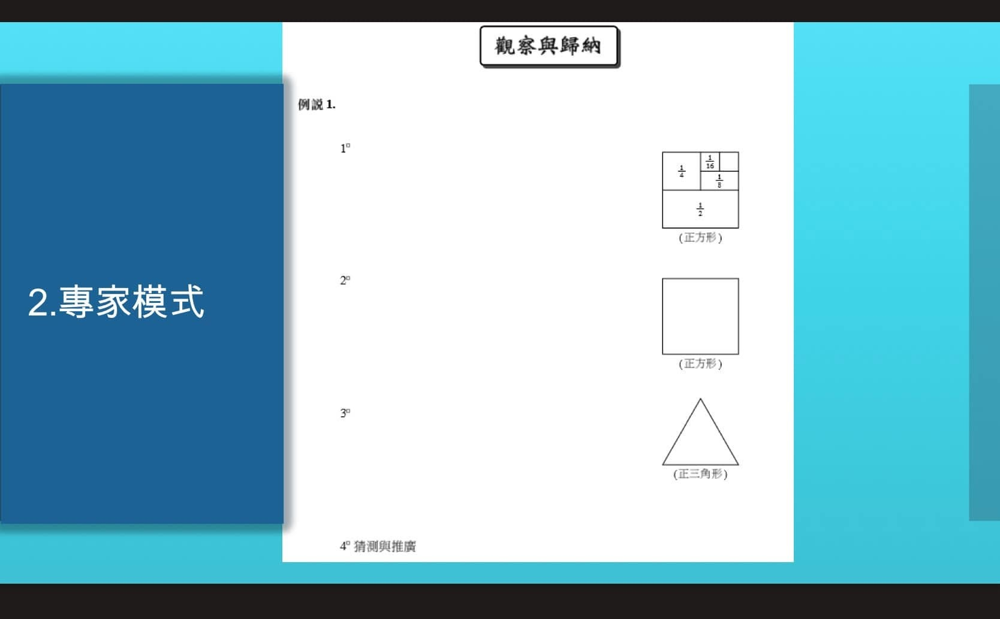

AMC8(2025/01)考了無窮級數‼️~獵豹教材具有前瞻性
這次AMC8有一道超綱題 P20,
用到無窮級數的概念（台灣高三）
這道題目的觀念在我的介紹獵豹小學課程直播中 （包括獵豹實體課家長說明會）多次出現 我舉的例子是吃菠蘿麵包。
P20
三個朋友阿明、阿強和小美分食一條大麵包。他們有個規則：每次輪到誰，就吃掉剩下麵包的一半。阿明先開始，吃掉剩下的一半，然後換阿強接著吃掉剩下的一半，接著是小美，依序輪流吃下去。這樣一直進行，直到麵包已經小到無法分割為止。試問阿明總共吃掉了原麵包的幾分之幾？
補充一下：
有不少聰明孩子注意到每一輪吃下的都是4:2:1，所以小明吃了全部的4/7。
這樣的處理 對於這道問題是很好理解的，
但卻不瞭解為何餅會吃完？
例如如果每次吃剩下1/3 ，餅是吃不完的。
我利用圖解說明，小學生也可直觀理解在什麼情況下餅會吃完 ，而建立更普遍性的規律。
不妨用正方形分割
看看1/3+1/9…
再試著用正三角形 分割
1/4+1/16…
會有新的發現。
既然討論「無窮吃餅」的概念 ，就應讓孩子看看在不同的公比下有不同的收斂情況。
